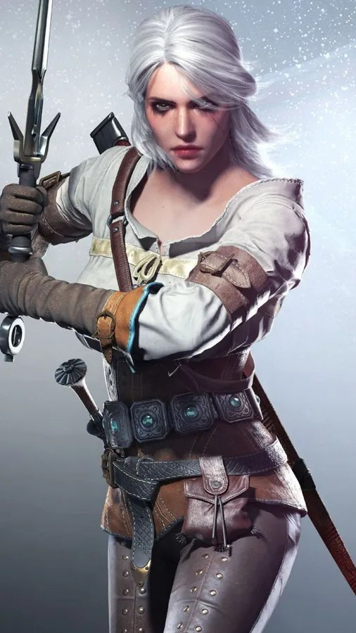
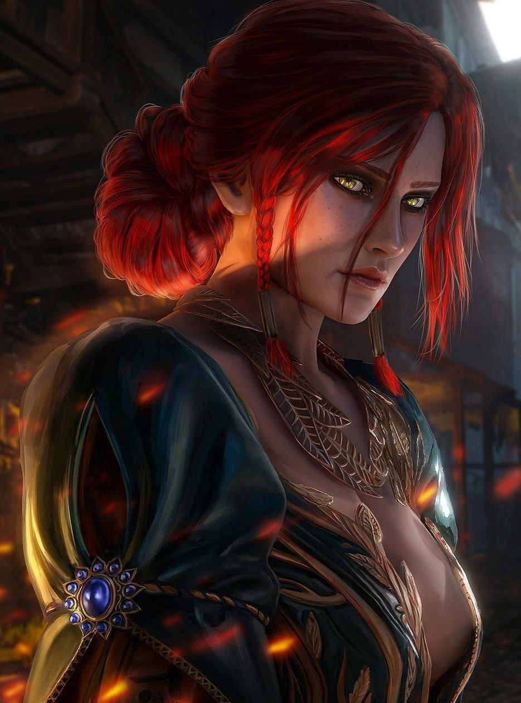
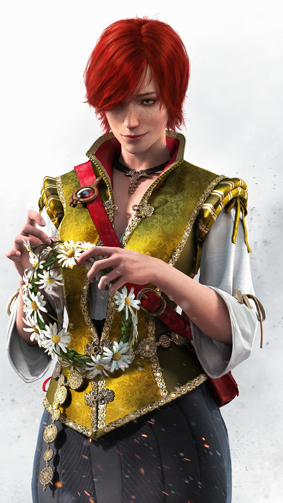

Geralt of Rivia
Geralt of Rivia, the enigmatic and charismatic protagonist of Andrzej Sapkowski's "Witcher" series, has captured the hearts and minds of readers, gamers, and viewers alike. His journey from a mutated monster hunter to a symbol of moral complexity, and his enduring popularity across various media, make him a character worth exploring. Geralt of Rivia, the Witcher, embodies the complexities of morality, love, and identity within a vivid and dark fantasy world. His journey from the School of the Wolf to a renowned monster hunter and his evolution as a character highlight the depth and enduring appeal of the Witcher series. His popularity across media platforms signifies the universality of his character, making him one of the most beloved heroes in modern fantasy literature and gaming.

Yennefer of Vengerberg

Yennefer of Vengerberg is a central character in Andrzej Sapkowski's "Witcher" series, a complex sorceress whose enduring popularity across books, video games, and television adaptations attests to her compelling character. Yennefer of Vengerberg, the enigmatic sorceress of the Witcher universe, is a character characterized by her complexities, magical prowess, and her deep relationships. Her journey from an ambitious and mysterious sorceress to a character who grapples with love, motherhood, and her past showcases her depth and humanity. Yennefer's enduring popularity across different forms of media speaks to her status as a beloved and relatable character within the vast and intricate world of The Witcher.

Cirilla Fiona Elen Riannon

Cirilla Fiona Elen Riannon, known simply as Ciri, is a central character in Andrzej Sapkowski's "Witcher" series and has garnered immense popularity across books, video games, and television adaptations. Ciri's compelling character, her unique destiny, and her dynamic relationships make her a focal point of the Witcher universe. Cirilla Fiona Elen Riannon, Ciri, is more than just a character; she is the embodiment of destiny, power, and resilience within the Witcher universe. Her journey from a royal heir to a figure of great importance, her remarkable abilities, and her emotional relationships contribute to her enduring appeal. Ciri's role in the larger context of the Witcher saga and her exploration of themes like destiny and choice make her a character of great depth and complexity in the world of fantasy literature and entertainment.
Triss Merigold of Maribor

Triss Merigold of Maribor is a significant character in Andrzej Sapkowski's "Witcher" series, known for her magical prowess, compassion, and enduring popularity. Triss Merigold of Maribor, the compassionate sorceress of the Witcher universe, embodies a unique blend of magical expertise and genuine empathy. Her journey from an aspiring magician to a powerful and caring sorceress is a testament to her character's depth and complexity. Her role within the Witcher narrative, her relationships with other central characters, and her embodiment of themes such as compassion and the consequences of one's choices make her an integral and beloved figure in the expansive world of fantasy literature and media adaptations. Triss Merigold stands as a testament to the power of empathy and the multifaceted nature of heroism in a fantastical world.
Dandelion
In Andrzej Sapkowski's renowned Witcher series, there exists a character whose charismatic personality, artistic talents, and unwavering friendship add a unique layer of depth to the narrative. Known as Dandelion in the English translations or Lutik in the original Polish, this character is a consummate bard, poet, and close friend of Geralt of Rivia, the series' protagonist. Dandelion, also known as Lutik, is a character in The Witcher series who captures the essence of artistic expression, friendship, and humor. His talent as a poet, his loyalty to Geralt, and his romantic escapades add depth and a unique flavor to the series, making him an unforgettable and beloved character. Dandelion's contributions to the world of The Witcher demonstrate the transformative power of art, storytelling, and enduring friendships in a world defined by its dark complexities and moral ambiguities.

Zoltan Chivay
In the expansive realm of fantasy literature, certain characters stand out for their uniqueness and depth, contributing to the allure and richness of the worlds they inhabit. Zoltan Chivay, a fictional dwarf warrior from Andrzej Sapkowski's acclaimed Witcher series, is one such character. With his distinctive personality, unwavering loyalty, and unwavering commitment to his beliefs, Zoltan Chivay is a character who leaves a lasting impression on readers. Zoltan Chivay, the indomitable dwarf warrior in Andrzej Sapkowski's Witcher series, is a character who captivates readers and viewers with his lively personality, unwavering loyalty, and moral integrity. His role as a steadfast friend and his involvement in complex societal issues contribute to the series' depth and relevance. Zoltan Chivay's enduring popularity within the Witcher fandom serves as a testament to his status as a beloved and memorable character in the realm of fantasy literature.

Shani
In the enthralling and morally complex world of Andrzej Sapkowski's Witcher series, a diverse cast of characters contributes to the richness and depth of the narrative. Among them, Shani, a skilled medic and compassionate healer, stands out as a character of significant importance. Shani, the compassionate and skilled medic in The Witcher series, is a character who stands as a symbol of empathy, compassion, and the enduring power of friendship in a world marked by its complexities and moral ambiguities. Her role as a healer and friend not only adds depth to the narrative but also underscores the idea that kindness and humanity can thrive even in the darkest of circumstances. Shani is a character whose significance reaches beyond her healing abilities, resonating with readers as a source of hope and inspiration in a world filled with darkness.
